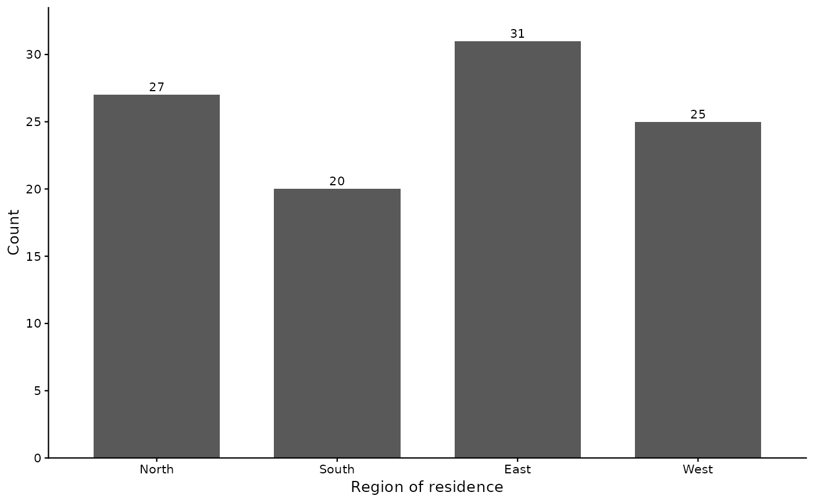

jtable() turns a saved analysis result into a publication table
and, when file is given, writes it to a Word file (.docx) that
opens in Word, LibreOffice and Google Docs. The table's look and
conventions come from a style – the built-in "apa" style for a
journal, the built-in "report" style for a report, or a style
file of your own (see jstyle).
Usage
jtable(
x,
headings = NULL,
markers = NULL,
title = NULL,
note = NULL,
source = NULL,
file = NULL,
style = NULL,
overwrite = FALSE,
open = FALSE,
print = NULL,
...
)
# S3 method for class 'jst_table'
print(x, ...)
# S3 method for class 'jst_tables'
print(x, ...)
# S3 method for class 'jst_figure'
print(x, ...)Arguments
- x
A saved result – what an analysis function returns, kept with
<-– or a list of them that share one table: a list ofjdesc()results, or ofjfreq()results, stacks into one table, each result's variables under its name in the list when the list is named; a list ofjlm()results, or ofjlogistic()results, with one outcome puts the models side by side, headed "Model 1", "Model 2", ... or by the list's names; a list ofjt(),jaov()orjcrosstab()results with one grouping variable stacks a row or a block per outcome; a list ofjalpha()results stacks the scales, each under its name. Ajcorr()result is a table of its own, and so is ajmulti()result. Or a tablejtable()has already built, or a list of them: they go to the file as they are, in the order given. Or a chart, made a figure: onejplot()drew, one drawn in ggplot2, or the set of plotsjplot()drew of one result, each a figure; a chart goes beside built tables, never beside a saved result.- headings
A named list: each heading and the variables under it, bare or in quotes, e.g.
list(Outcome = WellbeingScore, Predictors = c(Income, Age)). Every variable of the result goes under one heading; the table follows the list's order. For a descriptives or frequency table.- markers
A named list: each specific note's text and the variables it marks, e.g.
list("Mean-centered" = c(Income, Age)). The style assigns the marks (superscript letters under APA), sets each on its rows' labels, and writes the note under the table. In a regression table a predictor's row is marked; in a t-test or ANOVA table an outcome's; in a crosstab a variable's label row; in a reliability table an item's.- title
The table's title, or a figure's; the style's title when NULL (a regression table's names the outcome, a t-test, ANOVA or crosstab's the grouping variable, a multiple-response table's is the text its items' labels share). A title given here fills the same placeholders the style's does –
{outcome},{group},{set}– sotitle = "Ages by {group}"names the grouping variable.*text*sets a word in italics.- note
The general note's text, after what the style writes there (N or the ns when they go there, a filter, a reference category);
*text*sets a word in italics. NULL for none.- source
The table's source, in quotes, for example
source = "Australian Bureau of Statistics (2025)"; the style places it: under apa the general note's last sentence, under report a line of its own under the notes, after "Source:" (the style'ssource.positionandsource.label). NULL for none.- file
The Word file to write, with its .docx extension: a bare name goes in the output folder (
joptions(output.dir = )) or the working directory; a path with a folder goes there. NULL writes nothing.- style
The style a table is built in, or a chart framed and drawn in – its name in quotes:
"apa","report", or the name of a style file ("myjournal"for myjournal.jstyle), looked for in the style folder (joptions(style.dir = )), the working directory and your jstats folder; or a path to one. NULL (the default) usesjoptions(style = ), apa when it is not set.- overwrite
Logical. Replace a file that exists? With FALSE (the default) an interactive session asks, and one that cannot ask stops.
- open
Logical. TRUE opens the file once it is written, in the program your computer opens .docx files with; only in an interactive session, so a script or a rendered page opens nothing. Needs
file.Print the report of what was made? NULL (the default) follows the
joutputlevel: the report prints unless the level is"silent". TRUE prints it under any level; FALSE prints nothing.- ...
A setting of the table type's section of the style, for this table only, e.g.
columns = c("mean", "sd")for a descriptives table,missing.rows = "none"for a frequency table orfit.rows = c("r2", "delta.r2")for a regression table: the call outranks the style file.jstyle_settingslists every setting. The general settings (the font, the caption's form, the decimals) are the style file's, exceptlandscape = "yes"or"no", a page choice the call may make. A chart's settings, the[plot]section's, are the style file's alone. Any other input stops with "unused input".
Value
The table, invisibly: an object of class jst_table, which
shows a facsimile of the Word table when printed. A call given two or
more built tables returns them together (class jst_tables),
which prints each one, numbered as in the file. A chart given alone
returns its figure (class jst_figure), which prints its caption
and note and draws the picture as the Word file holds it.
Details
A table is made from each kind of result: a descriptives table from one
or more jdesc results; a frequency table from one or more
jfreq results – each variable's label on a row of its
own, its categories indented under it; a regression table from one or
more jlm results, or a logistic regression table from
jlogistic results – the models of one outcome side by
side, each under its own head, the constant first, a dummy-coded
variable's categories indented under its label with the reference
category named, and the fit rows under the predictors; a correlation
table from a jcorr result – the variables numbered, their
n, mean and standard deviation, and the correlations below the
diagonal; a t-test table from jt results, or an ANOVA table
from jaov results, of one grouping variable – one row per
outcome, each group's mean and standard deviation, then the test; a
crosstab from jcrosstab results of one column variable –
each row variable's categories with their counts and percentages in
each group, and the chi-square test; and a reliability table from
jalpha results – each item's mean, standard deviation,
corrected item-total correlation and alpha if the item is deleted; and a
multiple-response table from a jmulti result – how many
chose each option of a set of yes/no items, and what percentage of
everyone who answered. A chart – one jplot() drew, or one
drawn in ggplot2 – goes into the Word file as a figure (see Charts,
below). The
variables of a descriptives or frequency table go under role headings
when headings names them, and each specific note's variables are
marked when markers names them. A filter the analysis applied
(jsubset, subset =) is named in the general note.
One call, one table. The results given to one call make one
table: results share a table when they share its columns (see
x). Results that cannot share one – results of different
kinds, models of different outcomes, tests of different grouping
variables – stop, and the message gives the lines that make each
table in a call of its own. To put several tables in one file, build
each table, then give the tables together:
jtable(list(t1, t2, t3), file = "Tables.docx"). The tables keep
the order given and are numbered so.
What prints. jtable() reports what it made: each table's
number and title, what it holds, the page it is on (a landscape page,
the text stepped down to fit), and where the file was written. To see a
table in the console, keep it with <- and print it:
print(t1), or type t1. The console shows a facsimile of
the Word table, its numbers formatted by the style.
The page. Under the style's landscape = "auto" each
table gets the page it needs: a table too wide for a portrait page sits
on landscape pages of its own, and the tables around it stay portrait.
landscape = "yes" or "no" in the call that writes a file
sets every page.
Charts. A chart kept with <- – one jplot() drew,
or one drawn in ggplot2 – is given as a built table is:
jtable(p1, file = "Figure1.docx") writes it as a figure, and
jtable(list(t1, p1, t2), file = "Report.docx") writes it between
the tables. Figures are numbered apart from the tables (Figure 1, Figure
2, ...), each framed as the style frames a table: the number, the title
with N after it, the picture, and a note only when there is one. A
jplot() chart's title is its variables' labels, or a model's or a
test's plot's own title; a chart drawn in ggplot2 has its own title, which
moves from the picture to the caption. title =, note = and
source = give one chart's. A jplot() chart is drawn in the
call's style =, or else in the style it was drawn in; a chart drawn
in ggplot2 keeps its own look. The picture is drawn at the size the
style's [plot] section gives (6 by 4 inches in both built-in styles, at
300 dots an inch), kept within the page. The [plot] section can also
write each chart's data to an Excel file beside the Word file
(data.file = yes: vector.file = pdf or eps:
Labels. A table or a figure shows each variable by its label and
each category by its value label, as the result kept them when the
analysis ran. Where the result holds none, the variable's name or the
category's code shows, and a note says so: add the label with
jrelabel() and run the analysis again.
The analysis inside the call. jtable(jlm(Fear ~ Age,
d)) runs the analysis without printing it and makes its table; errors
and warnings still show.
Keeping a result for a later session. A saved result is an R
object, which base R keeps in a file of its own:
saveRDS(m1, "m1.rds"), then in a later session
m1 <- readRDS("m1.rds"). A result made by an earlier version of
jstats than the table needs stops, and says which version made it.
See also
jstyle for styles, jstyle_settings
for every setting a style holds.
Examples
# Keep a result, make its table, and look at it in the console
d1 <- jdesc(community, Age, Income, print = FALSE)
t1 <- jtable(d1, title = "Descriptive Statistics for Study Variables")
#> Table 1. Descriptive Statistics for Study Variables (N = 103)
#> 2 variables, on a portrait page.
#> The table was made in R; no Word file was asked for.
#>
print(t1)
#> Table 1
#> Descriptive Statistics for Study Variables (N = 103)
#> --------------------------------------------------------------
#> Variable n M SD Min Max
#> --------------------------------------------------------------
#> Age (years) 103 40.65 11.62 18 71
#> Annual income (USD) 97 49,855.67 17,427.22 14,000 93,000
#> --------------------------------------------------------------
#>
# Two models of one outcome side by side, written to a Word file
m1 <- jlm(WellbeingScore ~ Age, community, print = FALSE)
m2 <- jlm(WellbeingScore ~ Age + Volunteer, community, print = FALSE)
t2 <- jtable(list(m1, m2), file = file.path(tempdir(), "Table2.docx"),
overwrite = TRUE)
#> Table 1. Regression Coefficients Predicting Wellbeing score (0-100) (N = 103)
#> 2 models side by side, on a portrait page.
#> Table written to /tmp/RtmpQioa65/Table2.docx
#>
# Several tables in one file: build each, then give them together
doc <- jtable(list(t1, t2), file = file.path(tempdir(), "Tables.docx"),
overwrite = TRUE)
#> Table 1. Descriptive Statistics for Study Variables (N = 103)
#> 2 variables, on a portrait page.
#> Table 2. Regression Coefficients Predicting Wellbeing score (0-100) (N = 103)
#> 2 models side by side, on a portrait page.
#> 2 tables written to /tmp/RtmpQioa65/Tables.docx
#>
print(doc)
#> Table 1
#> Descriptive Statistics for Study Variables (N = 103)
#> --------------------------------------------------------------
#> Variable n M SD Min Max
#> --------------------------------------------------------------
#> Age (years) 103 40.65 11.62 18 71
#> Annual income (USD) 97 49,855.67 17,427.22 14,000 93,000
#> --------------------------------------------------------------
#>
#> Table 2
#> Regression Coefficients Predicting Wellbeing score (0-100) (N = 103)
#> --------------------------------------------------------------------------
#> Model 1 Model 2
#> Predictor b SE β p b SE β p
#> --------------------------------------------------------------------------
#> Constant 37.11 3.90 <.001 37.33 3.81 <.001
#> Age (years) 0.34 0.09 .34 <.001 0.27 0.09 .27 .005
#> Volunteered in past year 5.36 2.18 .23 .016
#> R² .12 .17
#> --------------------------------------------------------------------------
#>
# A chart as a figure, beside the tables
p1 <- jplot(community, Region)
#> Bar Chart: Region
#>
#> Analysis N: 103
#>

doc2 <- jtable(list(t1, p1), file = file.path(tempdir(), "Report.docx"),
overwrite = TRUE)
#> Table 1. Descriptive Statistics for Study Variables (N = 103)
#> 2 variables, on a portrait page.
#> Figure 1. Region of residence (N = 103)
#> a bar chart, 6 by 4 inches, on a portrait page.
#> 1 table and 1 figure written to /tmp/RtmpQioa65/Report.docx
#>
# Keep a result for a later session with base R
path <- file.path(tempdir(), "m1.rds")
saveRDS(m1, path)
m1 <- readRDS(path)